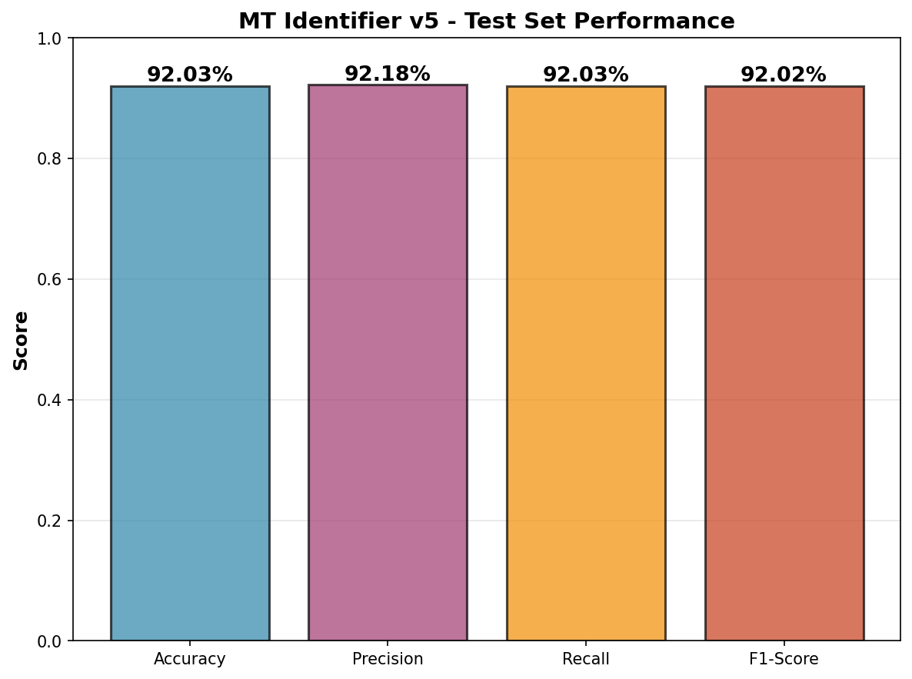

MT Identifier v5 - Training Results
Main Track Classification Model - November 5, 2025
Model: simple_cnn |
Dataset: NEW data paths |
Training Time: ~43 minutes (10 epochs with early stopping) |
Output: /eos/user/e/evilla/dune/sn-tps/neural_networks/mt_identifier/simple_cnn/plane_X/20251105_192215/
92.03%
Accuracy
92.18%
Precision
92.03%
Recall
92.02%
F1-Score
📈 Training History
Loss and accuracy curves showing model convergence over 10 epochs. Early stopping prevented overfitting when validation loss stopped improving.

🎯 Confusion Matrix
Classification performance breakdown: 89% background recall, 95% main track recall. The model is slightly better at identifying main tracks than filtering out background.

📊 Test Metrics Summary
Overall performance on the test set showing consistent ~92% performance across all metrics.
